Traffic lights tell drivers and pedestrians what they must do at intersections and along roads. They tell road users when to stop and go, when and how to turn and when to drive with extra caution.
Green light
A green light means you may turn left, go straight or turn right after yielding to vehicles and pedestrians already in the intersection. When turning left or right you must yield the right-of-way to pedestrians crossing the intersection.
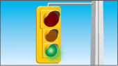
Yellow light
A yellow - or amber - light means the red light is about to appear. You must stop if you can do so safely; otherwise, go with caution.
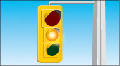
Red light
A red light means you must stop. Bring your vehicle to a complete stop at the stop line if it is marked on the pavement. If there is no stop line, stop at the crosswalk, marked or not. If there is no crosswalk, stop at the edge of the sidewalk. If there is no sidewalk, stop at the edge of the intersection.
Wait until the light changes to green and the intersection is clear before moving through it.
Unless a sign tells you not to, you may turn right on a red light only after coming to a complete stop and waiting until the way is clear. You may also turn left on a red light if you are moving from a one-way road onto a one-way road, but you must come to a complete stop first and wait until the way is clear.
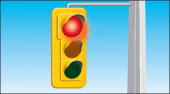
Lights and arrows to help turning vehicles
Flashing green lights and green arrows direct drivers who are turning.
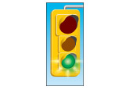
Advance green light or arrow
When you face a flashing green light or a left-pointing green arrow and a green light, you may turn left, go straight ahead or turn right from the proper lane. This is called an advanced green light because oncoming traffic still faces a red light.
Pedestrians must not cross on a flashing green light unless a pedestrian signal tells them to.
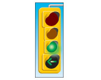
Simultaneous left turn
When a left-turn green arrow is shown with a red light, you may turn left from the left-turn lane. Vehicles turning left from the opposite direction may also be making left turns because they too face a left-turn green arrow.
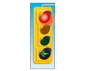
After the left-turn green arrow, a yellow arrow may appear. This means the green light is about to appear for traffic in one or both directions. Do not start your left turn. Stop if you can do so safely; otherwise, complete your turn with caution.
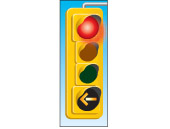
You can still turn left when the light is green, but only when the way is clear of traffic and pedestrians. If the light turns red when you are in the intersection, complete your turn when it is safe.
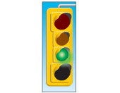
Pedestrians must not cross on a left-turn green arrow unless a pedestrian signal tells them to.
Transit priority signals
Traffic and pedestrians must yield to public transit vehicles at a transit priority signal. The round signal is on top of a regular traffic signal and shows a white vertical bar on a dark background. This allows transit vehicles to go through, turn right or left, while all conflicting traffic faces a red light.
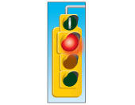
Fully protected left turn
Some intersections have separate traffic lights for left-turning traffic and for traffic going through the intersection or turning right.
When a left-turn green arrow appears for traffic in the left-turn lane, traffic going straight ahead or turning right will usually see a red light. You may turn left from the left-turn lane when you face a green arrow. Vehicles from the opposite direction may also be turning left.
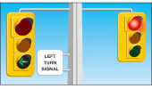
After the left-turn green arrow, a yellow light appears for left-turning vehicles only.
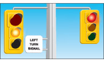
After the yellow light, a red light appears for left-turning vehicles only. Traffic going straight ahead or turning right will face a green light or green arrows pointing straight ahead and to the right.
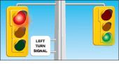
In these intersections, you may not begin turning left after the green light appears for traffic going straight ahead or turning right. If the light turns yellow while you are in the intersection, complete your turn with caution.
Flashing red light
You must come to a complete stop at a flashing red light. Move through the intersection only when it is safe.
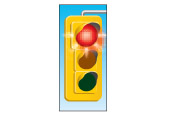
Flashing yellow light
A flashing yellow light means you should drive with caution when approaching and moving through the intersection.
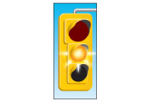
Blank traffic lights
During an electrical power loss, traffic lights at intersections will not work. Yield the right-of-way to vehicles in the intersection and to vehicles entering the intersection from your right. Go cautiously and use the intersection the same way you would use an intersection with all-way stop signs.
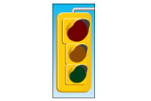
Traffic beacons
A traffic beacon is a single flashing light hung over an intersection or placed over signs or on obstacles in the road.
Flashing red beacon
A flashing red beacon above an intersection or stop sign means you must come to a complete stop. Move through the intersection only when it is safe to do so.
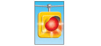
Flashing yellow beacon
A flashing yellow beacon above an intersection, above a warning sign or on an obstruction in the road, warns you to drive with caution.
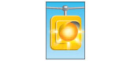
Summary
By the end of this section you should know:
- The different colours and symbols that appear on traffic lights and what those mean
- How to navigate turns using advanced green lights and arrows
- How to proceed when approaching flashing amber or red lights
- What to do in situations where the traffic lights are not operating